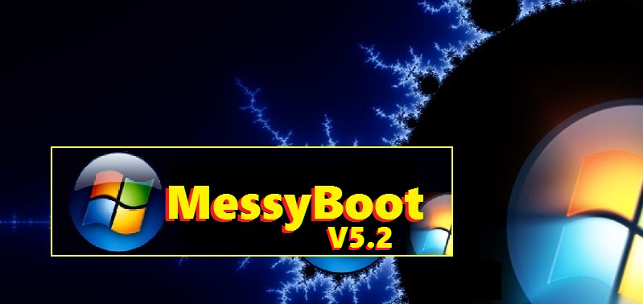

MessyBoot 5.2 Windows NT5 Build
Boot Tools, Diagnostics, Utilities & Drivers for Windows based PCs
MessyBoot is a collection of drivers, tools, diagnostics and utilities for Windows based PCs. MessyBoot Boot Tools, Diagnostics, utilities & Drivers for Windows 2000, Windows XP and Windows Server 2003 Family. more info 
Instructions
Due to GitHub's 1Gb Repository limit and their 50Mb file size limit, the MessyBoot ISO files are currently only available to download via BitTorrent. Both the NT5 (2K/XP) and the NT6 (Vista onwards) ISO's are contained in the download, so just deselect either of the files in your BitTorrent client if you do not require them. The only difference between the NT5 and NT6 releases are the DriverPack bases for the automatic drivers installers, and of course, Mini Windows 7 on the NT6 release. There are two torrents available, one tracked by private trackers such as Demonoid, and one tracked by anonymous trackers like ThePirateBay To create MessyBoot, download the ISO via BitTorrent, burn the ISO file (disc image) to a blank, single layer, 4.7GB Recordable DVD. That's it! It's that simple!Downloads
Overview
MessyBoot has two different functions;
These are tools that are accessible directly by booting to the DVD.
2. Windows Tools
These are tools that can only be run from within Windows (Can be run from within the Mini-Windows 7 image in the Bootable Tools menu).
The Boot Tools Include:
- Password Removal / Recovery
- Disk Tools (Diagnostics / Rejuvenators / Data Recovery / Secure Erase)
- Hardware Testing (All Types)
- Burn-In Tools
- DMI Tools
- Mini Windows 7 (Bootable Live Image)
- Mini Linux (Bootable Live Image)
The Windows Tools Include:
- Hardware Testing Tools
- Software Analysis Tools
- Driverpack Installer System
- Drivers Backup System
- Various Benchmarking Packages
- Data Recovery Tools
- Much much more!
Supported OS:
- Windows 2000 Professional
- Windows 2000 Server
- Windows XP Home
- Windows XP Professional
- Windows XP Media Center Edition
- Windows Server 2003
Authors and Contributors
Kev Messy aka kevwag on GitHub
Support or Contact
MessyBoot email:messyboot@gmail.com